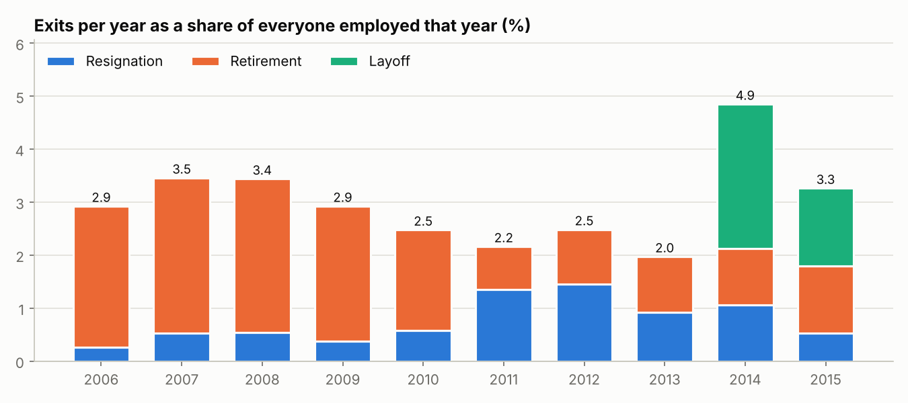
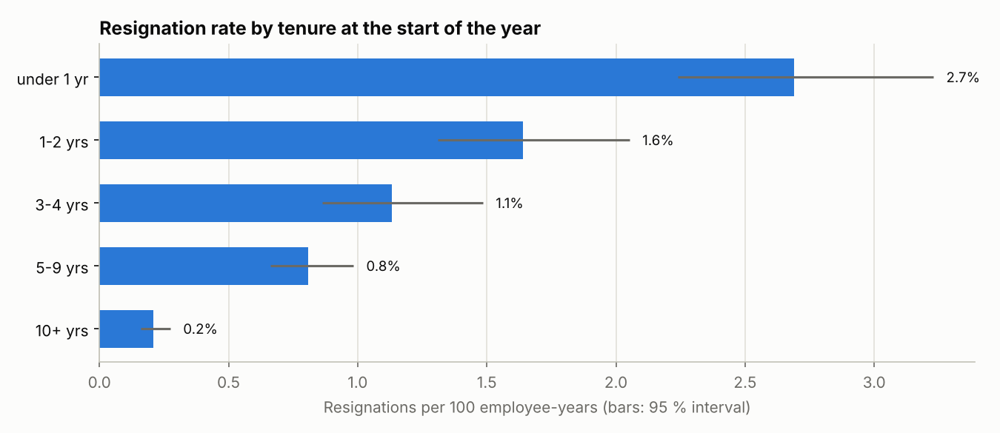
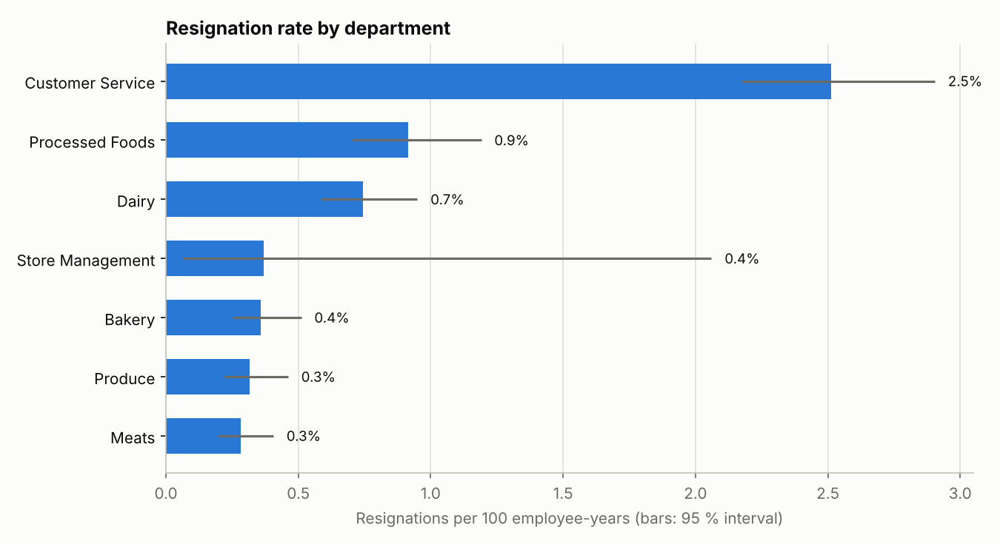
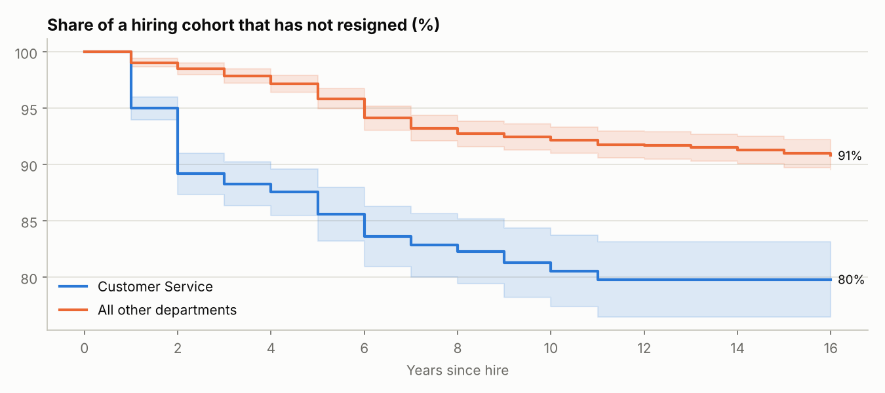

Who leaves, why, and can we see it coming?
Turnover analysis of 6,284 employees, 2006 to 2015
(49,648 employee-years)
3.0%of staff leave in an average year, for any reason
0.8%resign in an average year
2.7%resign in their first year, against 0.2% after ten years
2.5%resign per year in Customer Service, against 0.5% elsewhere
1. Three different things are called "turnover"
Of 1,485 exits, 885 were
retirements, 385 resignations and 215 layoffs. Only resignations are the
employee's own decision and can be influenced by retention measures, so the rest of this report is about them.

Retirement needs no model: 100% of retirees in the test years left
in the year they turned 60 or 65. Layoffs are a company decision and cannot be predicted from employee data.
2. Resignations happen early, and mostly in one department


After five years, 92% of a hiring cohort has not resigned; in
Customer Service it is 86%.

3. Can next year's resignations be predicted?
Models were fitted on 2007 to 2013 and tested on 2014 to
2015, years they had never seen (10,175 employee-years,
81 resignations).
|
ROC AUC |
95% low |
95% high |
PR AUC |
Found in top 5% (%) |
Found in top 10% (%) |
Found in top 20% (%) |
| tenure only |
0.909 |
0.888 |
0.933 |
0.086 |
66.667 |
66.667 |
66.667 |
| logistic regression |
0.887 |
0.864 |
0.912 |
0.047 |
41.975 |
66.667 |
70.370 |
| gradient boosting |
0.926 |
0.915 |
0.937 |
0.107 |
32.099 |
49.383 |
98.765 |

ROC AUC: 0.5 = guessing, 1.0 = perfect. "Found in top 10 %" = share of all resignations among the 10 % of
employees with the highest predicted risk. Intervals resample employees, not rows.
4. How far can these numbers be trusted and used?
- A flag is usually wrong. Resignation is rare, so among the 10% of employees the best model
(gradient boosting) ranks highest, only 3.9% actually resign.
The list shows where to look, not who will leave.
- One label hides three processes. A model trained to predict any exit scores
0.73 overall, which mixes near-certainty for retirement
(0.99)
with guessing for layoffs (0.52).
- The raw file leaks the answer. Records of active employees already contain their future termination date. That
column is dropped before any modelling.
- Gender is not a model input, but outcomes still differ by gender. See the table: the share of leavers a
10% risk list finds is not the same for women and men.
Best model (gradient boosting), top 10% flagged
|
Employee-years |
Resign (%) |
Flagged (%) |
Leavers found (%) |
Flags that were right (%) |
Stayers flagged (%) |
| Female |
5134 |
0.9 |
9.3 |
62.5 |
6.2 |
8.8 |
| Male |
5041 |
0.7 |
10.8 |
30.3 |
1.8 |
10.7 |
Simple rule (shortest tenure first), top 10% flagged
|
Employee-years |
Resign (%) |
Flagged (%) |
Leavers found (%) |
Flags that were right (%) |
Stayers flagged (%) |
| Female |
5134 |
0.9 |
10.3 |
43.8 |
4.0 |
10.0 |
| Male |
5041 |
0.7 |
9.7 |
100.0 |
6.8 |
9.1 |
5. What I would do with this
- Focus retention work on the first two years and on Customer Service: onboarding, scheduling and pay there
affect the most leavers.
- Use predicted risk for team-level planning (expected leavers per store and department), not for decisions about
individuals. Age and tenure drive the scores, and age is a protected characteristic.
- Plan retirements from the age structure directly; no model is needed.
- Before any operational use: agree with the works council and data protection officer what is scored and who sees
it, keep a human decision in every case, and re-check the gender table each year.
Generated by the turnover package. Method details are in the repository README.